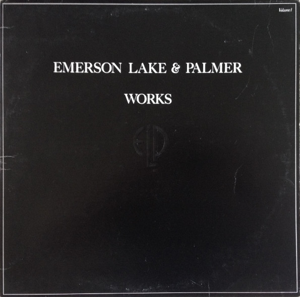

LP
Works (Volume 1)
Emerson, Lake & Palmer
Media: — · Sleeve: —
—
Personal
Discogs SuggestedCA$97.70
Discogs MedianCA$97.70
Discogs HighCA$97.70
- Physical Copy ID
- BB-LP-106
- Year
- 1977
- Label
- Atlantic, Atlantic
- Catalog #
- K80009, K 80009
- Country
- GBUK
- Genre / Style
- Jazz, Rock, Classical · Prog Rock, Neo-Classical, Jazz-Rock, Soft Rock